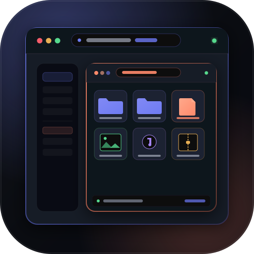

browser-browser Settings
Configure VaultSqwares theme, Python-Zipper daemon, and directory browsing
v1.0.0
Python-Zipper Daemon Endpoint
HTTP URL where your local python-zipper background server or vaultwares-api is listening.
Test Connection
Default Layout Mode
The default visual presentation when navigating to directories.
Grid Thumbnail Cards
Detailed Sortable Table
Compact List
Keyboard Shortcuts & Spacebar Quick Look
Enable Spacebar for instant multi-format file inspection, '/' for search, and arrow-key navigation.
Enable Quick Look & Global Hotkeys
Max Text/Code Preview Size (MB)
Maximum file size to attempt inline text syntax highlighting.
✓ Settings saved
Save Preferences